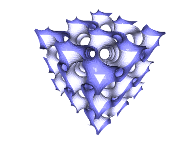

python src\implicit_function.py np.sin(4*x)*np.cos(4*y)+np.sin(4*y)*np.cos(4*z)+np.sin(4*z)*np.cos(4*x)
・矢印キーで level を上げ下げする。
f(x,y,z) = level で 3D 形状が決まる。
値が大きすぎても、小さすぎてもエラー終了する(^^;)ので、その場合はやり直す･･･
・sキー押下で、implicit_function.ply に保存され、終了する。